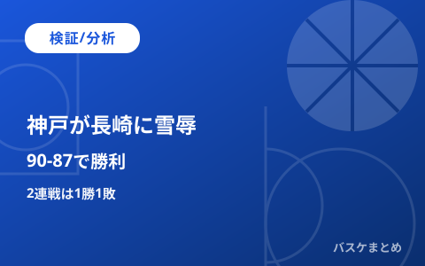

神戸が長崎に90-87で雪辱、2連戦は1勝1敗

神戸ストークスと長崎ヴェルカは10月31日と11月1日に2連戦を行いました。結果は1勝1敗でした。この記事は2連戦の結果確認と、両チームの現在の順位を独自に整理したものです。
【検証】第1戦は長崎が81-71で勝利
10月31日の第1戦は、神戸のホームで行われました。試合は長崎が81対71で勝ちました。神戸は前半を5点リードして折り返しましたが、後半に逆転されました。
第4クォーターはランドルフ選手と熊谷選手の得点で、長崎が試合を決めました。この結果は長崎国際テレビなど複数の地元メディアで一致しています。
【検証】第2戦は神戸が90-87で雪辱
11月1日の第2戦も、同じ神戸のホームで行われました。試合は神戸が90対87で勝ちました。神戸はこの勝利で連敗を止めました。
試合は神戸が前半をリードする展開でした。第3クォーターに長崎が逆転し、神戸は10点差を追う第4クォーターに入りました。終盤に神戸が逆転し、残り1秒で長崎が狙った同点の3ポイントシュートは外れました。
長崎はブラントリー選手とランドルフ選手が奮闘しました。馬場雄大選手はこの2連戦でコンディション調整のため、ベンチ外になった試合がありました。
【分析】2連戦後の両チームの成績と順位
この2連戦を終えて、神戸の通算成績は3勝10敗になりました。順位はB.PREMIER西地区の11位です。この数字はB.LEAGUE公式の試合結果ページで確認しました。
長崎の通算成績は6勝8敗になりました。順位は同じ西地区の7位です。神戸は今回の勝利でも、目標とする勝率5割にはまだ届いていません。
【分析】昨季王者の長崎が7位にとどまる現状
長崎ヴェルカは2025-26シーズンのB1年間王者です。チャンピオンシップのファイナルで琉球を2連勝で下し、クラブ初優勝を果たしました。今季は開幕から1カ月半が過ぎ、西地区7位です。
この順位は、当サイトが今回の試合結果を加えて独自に集計したものです。公式の順位表と異なる場合は、B.LEAGUE公式サイトをご確認ください。開幕から1カ月半の段階であり、今後の結果で順位は変わる可能性があります。
Q&A
Q. 今回の記事は試合を予測したものですか？
A. いいえ。すでに確定した2試合の結果を確認し、順位の変化を独自に整理したものです。
出典:
https://www.bleague.jp/game_detail/?ScheduleKey=506529&tab=2(B.LEAGUE公式、10/31神戸vs長崎の試合ページ)
https://news.yahoo.co.jp/articles/19875bea9b8dc2b67d8cafee947e760ba2f56be1(長崎国際テレビ、10/31第1戦で長崎が逆転勝利、81-71)
https://www.bleague.jp/game_detail/?ScheduleKey=506542&tab=2(B.LEAGUE公式、11/1神戸vs長崎の試合ページ)
https://www.nagasaki-np.co.jp/kijis/?kijiid=af939c9525f249ddad37cbdcd15307dd(長崎新聞、11/2公開、第2戦87-90・長崎は通算6勝8敗で西地区7位、取得2026-11-03 08:40 JST)
https://news.yahoo.co.jp/articles/e2f77ba3060c589539b49e4c263ed515727e85fe(長崎国際テレビ、11/1第2戦速報90-87)
https://news.yahoo.co.jp/articles/df2656c3728bcff50e9989e8ed5e7886aa307e7f(NBC長崎放送、ブラントリー・ランドルフの奮闘と馬場雄大選手のベンチ外)
https://news.yahoo.co.jp/articles/cd6f99e81a76b87844d156d126e5db2ab8fdc0bf(サンテレビ、神戸は連敗を止めて通算3勝10敗・西地区11位、勝率5割を目標と発言)
https://sports.yahoo.co.jp/column/detail/2026052800001-spnavi(スポーツナビ、長崎ヴェルカが2025-26シーズンのB1年間王者と確定)
※ 本記事は接続先の制限により各ページをWeb検索の結果表示で確認しました。両選手の出場時間を含む個人スタッツ、11月1日時点の公式インジュアリーリスト、神戸と長崎の通算対戦成績は未確認です。